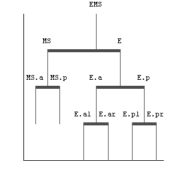
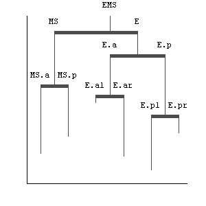
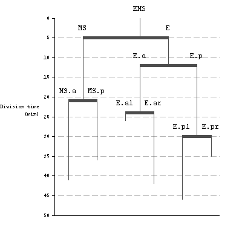
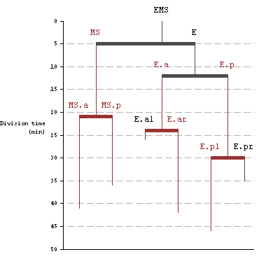
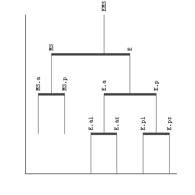

Plotting a tree
The tree class has a plot method:
[ lineage, duration ] = tree.example; % 1st one is made of strings only, 2nd one of integers slin = lineage.subtree(19); % Work on a subset sdur = duration.subtree(19); figure('Position', [100 100 300 300]) slin.plot;
What is nice is that it can be combined with another synchronized tree to specify the length of the vertical branches. Of course, this second tree must be in sync with the first, and only contain scalar numeric data.
Do you remember the example data? It is made of two synchronized trees. The first one, lineage contains the standard name of the C.elegans embryo cells. The second one, duration, contains the length, in minutes, of this cell cycle. A way to output the result is the following:
figure('Position', [100 100 300 300])
slin.plot(sdur);
 An extra argument (in the form of a key/value pair) can be passed to specify a Y label, and have the Y ticks shown:
figure('Position', [100 100 400 400]) slin.plot(sdur, 'YLabel', {'Division time' '(min)'});
Interlude: I tried very hard to comply to Edward Tufte recommendations when generating a graphic plot. The text items are displayed horizontally, directly on the graph to avoid using a legend, the axis ticks are prolonged on the graph as white ticks, the Y axis displays the min and max, etc... Still, my wife and colleagues tell me that this plot hurts their eyes. So following is a way to edit and customize it to your liking.
The plot method generates 3 outputs that are all synchronized trees. These 3 trees contain the graphic handles to the 3 primitives used to lay the plot, for each node:
[vlh, hlh, tlh] = slin.plot(sdur, 'YLabel', {'Division time' '(min)'});
- vlh contains the handle to the vertical lines that go below the node's location
- hlh contains the handle to the thick horizontal lines that link the node children
- tlh contains the handle to the node text item
We can use this for instance to color in red all the nodes that have a duration value larger than 10 minutes:
rcolor = [ 0.6 0.2 0.2 ]; aboveTreshold = sdur > 10; % true if longer than 10 minutes iterator = aboveTreshold.depthfirstiterator; for i = iterator if aboveTreshold.get(i) set( vlh.get(i), 'Color' , rcolor ) set( hlh.get(i), 'Color' , rcolor ) set( tlh.get(i), 'Color' , rcolor ) end end
The plot method can be passed extra arguments to tune the appearance and location of the plot, using classical key/value pairs. They are documented in the method itself, that you can access by calling
help tree/plot
Nevertheless, here is just a few of them. The 'TextRotation' key can be used to rotate labels. If you want to skip the vertical line length tree, you still need to pass an empty array:
clf
slin.plot([], 'TextRotation', 90);
 Back to main page.